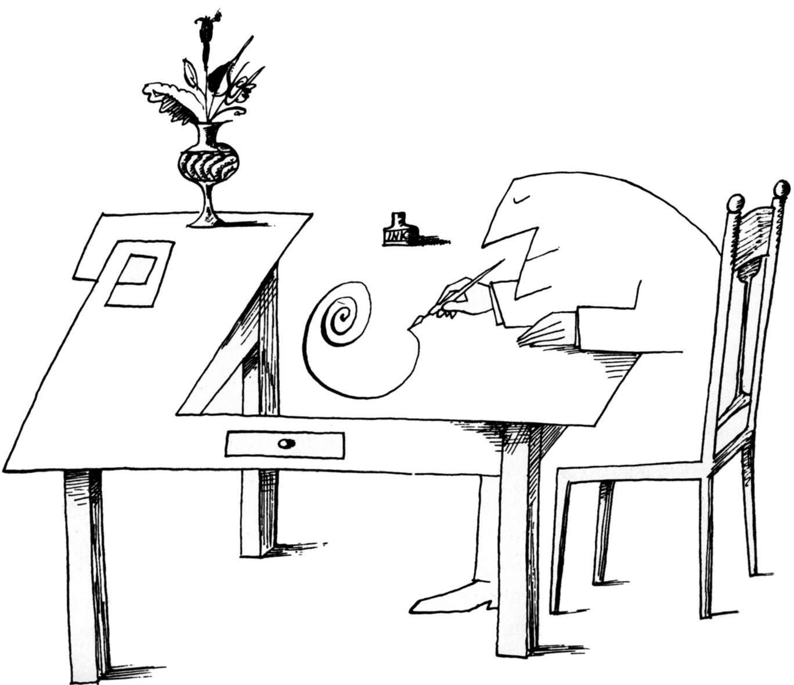

本图来源于《纽约客》1965年5月29日。
Saul Steinberg, Untitled drawing, ink on paper.
Originally published in The New Yorker, May 29,1965.
©The Saul Steinberg Foundation/Artists Rights Society (ARS), New York.
1970年，身为一名德克萨斯大学较为年轻的教授，我得到了一个难以回绝的机会： 受邀到一个美丽的地方呆上一年，享受着全职薪酬而几乎不需要做些什么——这是件不错的事情！
我的寓所位于斯坦福大学校园边的一个乡下小山丘上，那里与我最喜爱的城市旧金山仅有着不远的车距。坐落在那座美丽小山丘上的机构，是一个被称之为行为科学高等研究中心的智库。高等研究中心不仅给我提供了一年的薪酬，而且还为我安排了一间办公室，以及我所需要的文秘辅助。我可以使用那里不错的图书馆，可以享用免费午餐，只要愿意，随时有机会和那些杰出的学者们讨论问题。当然，有时我会去旧金山的剧院区闲逛，或者去高西斯拉山滑雪。如前所述，这一切没有任何附加条件。
在那里，整整一年时间我都可以随心所欲地做自己想做的事情，那么我做了点什么呢？我的选择是，将自己关在那座小山丘上的办公室里撰写这本书。为什么我会做出这样的选择？唯一的理由是，数月之前，在我的社会心理学入门课堂上，我亲口对600多名学生讲过，社会心理学是一门年轻的学科，其结果是这种似是而非的辩解使得我看起来更像一个懦夫。
请容我解释： 我们社会心理学家喜欢讲社会心理学是一门年轻的学科，与大多数自然科学（例如，生理学、天文学）相比，这无疑是一种准确的说法。当然，至少从亚里士多德（Aristotle）时代开始，敏锐的观察者们已经针对社会现象提出了一些引人关注的断言和振奋人心的假说，但是直到进入20世纪，这些断言和假说才受到了严格的检验。据我所知，第一个系统的社会心理实验是1898年垂普勒特（Triplett）完成的，他测量了竞争对成绩的影响。然而真正意义上的实验社会心理学则诞生于20世纪30年代后期，主要是因为有了库尔特·勒温（Kurt Lewin）以及他的那些杰出学生们的推动。
然而，从深层次看，对我而言声称社会心理学是一门年轻的学科，则又会陷入因极力逃避而带来的自责之中——这无疑是在恳求我的学生们不要对我们抱太大的期望。尤其是在运用已有研究成果来解决现实世界的问题时，这样说可以使我们推脱应负的责任，回避潜在的风险。从这层意义上讲，声称社会心理学是一门年轻的学科，无异于坦陈我们还不能够讲出任何重要的、有用的或者与我学生们的生活有关的事情。
但是仔细推敲之后，我意识到这类说法不仅是怯懦的，而且是一种误导。事实上，我的确不赞成社会心理学与我们的生活无关的说法。上世纪70年代如此，至今我依然持同样的观点。因此，拥有了那样一个极好的休假机会，我便下决心突破此类说法。本书的目的曾经是（而且至今仍然是），为了阐明社会心理学研究有可能帮助我们理解（甚至有可能开始帮助我们解决）困扰当代社会的一些最重要的问题。
本书的大部分材料建立在实验的基础之上，但大多数实例和例证却来源于当下所面临的社会问题。这些问题包括偏见、宣传、战争、精神错乱、攻击、骚乱以及政治动荡。这种两重性体现了我本人所持的两个偏见——也是我情有独钟的两个偏见。第一个偏见是，实验方法是我们理解复杂现象的最好方法。科学的自明之理在于，真正认识世界的唯一途径是重构： 也就是说，为了真实地理解是一种事物导致了另一种事物，仅仅靠简单的观察是远远不够的，更为重要的是，我们有责任创设一种事物以便确定它的出现的确导致了另一事物的出现。我所持的第二个偏见是，要确定通过实验所发现的因果关系是有效的，唯一途径便是将这些发现从实验室拿到现实世界中去加以验证。因此，作为一名科学家，我愿意在实验室里工作；而作为一名普通百姓，我又希望获得一扇观察周围世界的窗户。当然，这扇窗户应当是双向的： 我们也可以经常从日常生活中获得一些假设。我们可以在实验室“纯净”的条件下对这些假设进行最充分的检验；与此同时，为了尽可能防止我们的想法变得“纯净”，我们要尝试着将实验室里的发现通过这扇窗户带回到现实世界，以检验这些发现能否站得住脚。
于是，我便花费了一年的时间去做自己想做的事情： 撰写这本书。从一开始，这本书便打上了我个人的烙印，因为它包含了许多我自己关于我们这个研究领域最重要问题的想法。由此而使我决定必须用第一人称单数的方式写出来，用一种置身其间的方式来描述我所发现的，以及我所理解的这门科学的状况。（与当时的任何一种教科书不同，在《社会性动物》中，“我”这个词反复出现。）让我感到非常高兴的是，我很快便发现学生们喜欢读这本书。他们特别喜欢这种个性化的写作方式，以及这本书的内容与他们个人生活的关联。《社会性动物》成为这一领域最为流行且久盛不衰的教科书之一。其结果是，我的工作一直不能停下，也不可能停下。为了追踪这一领域的研究，适应这个世界的急剧变化，我发现有必要每隔四年对本书进行修订和更新。
1970年当我第一次开始撰写本书时，才38岁左右，还是一个踌躇满志的年轻人。而今，在2017年的夏天，在给诸位讲述这个故事的时候，我已经变成了一位头发花白的老者（你可以计算一下我的年龄）。我现在必须承认我年事已高，已经不能亲自来修订这本书了。幸运的是，我找到了本书第12版的最佳合著者，他的名字叫乔舒亚·阿伦森（Joshua Aronson）——一位杰出的、经验丰富的社会心理学家。他在实验室研究和真实世界的现场研究中都取得了引人注目的成就。他也是我的儿子。毋庸讳言，乔舒亚也有着他个人对社会心理学的看法——这是完全可以理解的。他著述颇丰，为这一版增色不少；我的长期合作者卡罗尔·塔夫里斯（Carol Tavris）也作出了同样的贡献，她继续担任这一版的编辑，以她一贯到位的拿捏处理，将我和乔舒亚的工作完美地融合在一起。她也没有为赶工期而催逼我们。
那么，这一版与之前版本有什么不同呢？我和乔舒亚重新梳理了每一章，删除了一些几年前所谓的热点研究和理论，它们没有经受住时间和重复研究的考验。我们对每一章内容进行了重组和精简，以便在整合新材料时保持叙述的清晰性。最近的研究为我们理解当下发生的事件提供了信息——例如，互联网是如何导致我们的决策过程变得更好或更糟，信息泡沫的出现以及自我确认的媒体来源如何塑造这个国家两极化的信仰和行为，脸书（Facebook）上不断出现的社会对比负面情绪，以及伊拉克和大叙利亚伊斯兰国（ISIS）等恐怖组织的崛起。然而，我强烈地感受到，将一本书“更新”并不意味着要删掉美国政府在越南和伊拉克问题上的错误案例，以及琼斯镇、哥伦拜恩、天堂之门之类的悲剧。这些事件是很久以前发生的，但其中隐含的社会心理教训却没有被很好地吸取。我希望学生们能够理解，当时发生的这些事情同样适用于解释当下发生的事情。
艾略特·阿伦森